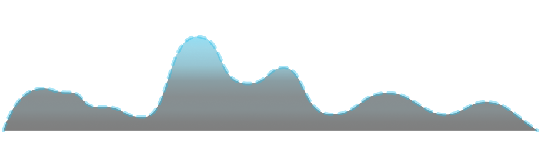
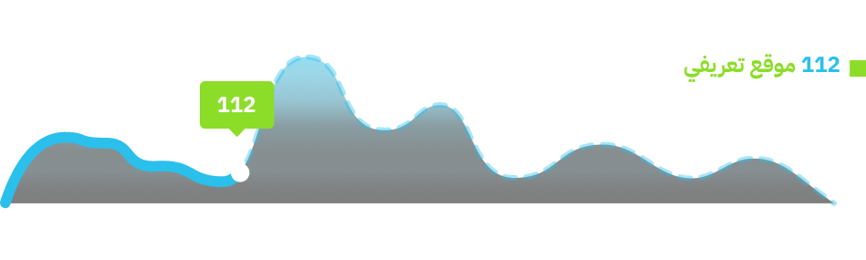
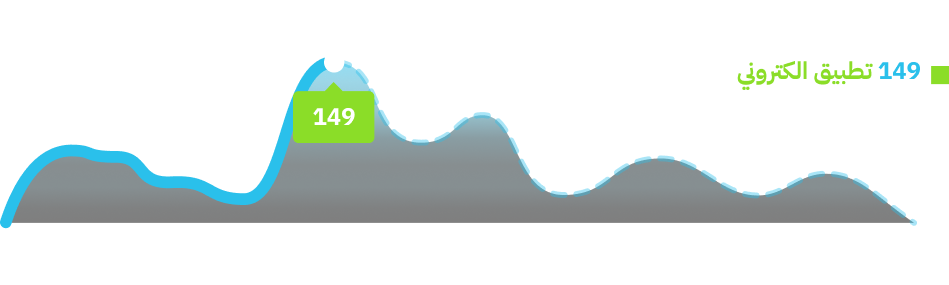
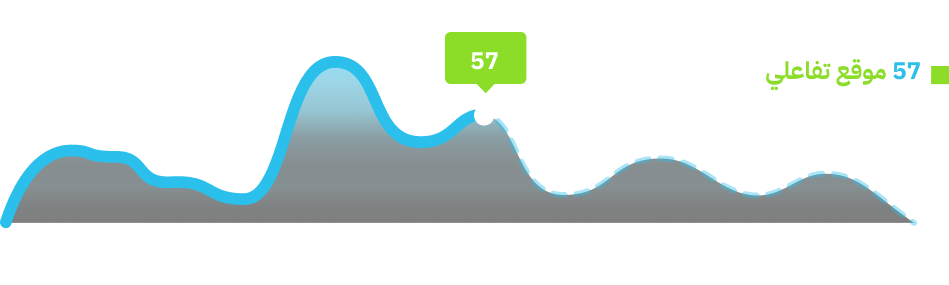
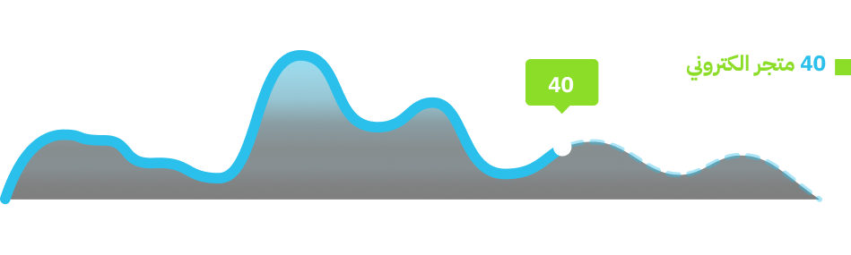

<html lang="en">

<head>
    <meta charset="UTF-8">
    <meta name="viewport" content="width=device-width, initial-scale=1.0">
    <title>Document</title>
</head>

<body style="background-color: black;">
    <div style="margin: auto; width: 50%;">
        <!-- <div class="chart-wrapper" id="chart_wrapper">
            
            
            
            
            
        </div> -->
        <div id="imageContainer">
            
            
            
            
            
            <!-- Add more images as needed -->
        </div>
    </div>

</body>
<script src="https://cdnjs.cloudflare.com/ajax/libs/jquery/3.5.1/jquery.min.js"></script>
<script>
    // let layers = chart_wrapper.querySelectorAll('img')
    // for (let i = 0; i < layers.length; i++) {
    //     const element = layers[i];
    //     console.log(element);
    // }


    $(document).ready(function () {
        const images = $('#imageContainer img');
        let currentIndex = 0;

        setInterval(function () {
            const currentImage = images.eq(currentIndex);
            const nextIndex = (currentIndex + 1) % images.length;
            const nextImage = images.eq(nextIndex);

            currentImage.fadeOut('slow', function () {
                currentImage.removeClass('active');
                nextImage.addClass('active').fadeIn(200);
            });

            currentIndex = nextIndex;
        }, 2000); // Change the interval (in milliseconds) as needed
    });


</script>

</html>